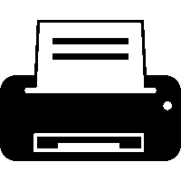

Testando Medias Queries

Imagens:
Telefone ícones criados por deemakdaksina - Flaticon
Smart tv ícones criados por Peter Lakenbrink - Flaticon
Impressora ícones criados por Freepik - Flaticon
Computador ícones criados por Freepik - Flaticon
Interface de usuário ícones criados por paonkz - Flaticon